Урок 2. Презентация в своём дизайне: Kimi
1. Начало
Шаг 1. Ас-саляму алейкум, дорогие коллеги
Ас-саляму алейкум, дорогие коллеги. Это второй урок блока «ИИ для преподавателя таджвида».
В первом уроке мы зарегистрировались в Kimi, рассказали ему о себе, разобрались с памятью и создали проекты для дипломной работы. Сегодня мы сделаем главное, ради чего всё это готовили: попросим Kimi собрать презентацию урока сразу в нашем дизайне.
Мы не будем отдельно рисовать дизайн в Canva или PowerPoint. Задачу на дизайн мы поставим Kimi с самого начала. Kimi выдаст файл PPTX, в котором дизайн уже готов, а вы только проверите и поправите текст.
Шаг 2. Цели урока
К концу урока вы будете уметь:
- выбрать тариф Kimi, на котором получится собрать все презентации диплома;
- подготовить проект к сборке: положить картинки-образцы дизайна и свой заполненный скелет урока в «Файлы» проекта и записать инструкцию проекта;
- знать кнопки интерфейса и понимать, какой текст куда вставлять: в чат, в «Инструкции» проекта, в «Настройки сеанса», в «Частые фразы»;
- провести сборку тремя запросами: проверка образцов, план и текст, сборка в дизайне;
- получить готовый файл PPTX, открыть его в Canva или PowerPoint и поправить текст;
- пользоваться другими инструментами Kimi для учителя: навыками, плагинами, квизами, документами, таблицами и глубоким исследованием;
- находить решение, если что-то пошло не так, и проверять презентацию перед сдачей куратору.
Шаг 3. План урока
Урок большой, он состоит из девяти частей. Проходите его по шагам, в своём темпе, и отмечайте «Пройдено».
- Тариф и приложение: какой тариф нужен и как поставить Kimi на телефон или планшет.
- Кнопки интерфейса: поле чата, «+», «/», инструкции, файлы, настройки сеанса, частые фразы — что куда вставлять.
- Подготовка проекта: что положить в «Файлы», что записать в «Инструкции».
- Сборка презентации: три запроса по порядку.
- Получаем файл: что делать, если ссылка не открывается, и как просить правки.
- Открываем и правим PPTX в Canva или PowerPoint.
- Возможности Kimi для учителя: режим «Слайды», навыки, плагины, квизы, документы, таблицы, глубокое исследование.
- Ошибки и проверка: что делать, если что-то не так, и чек-лист перед сдачей.
- Закрепление: практика, термины, домашнее задание и рефлексия.
2. Тариф и приложение
Шаг 4. Почему нужен тариф Plus
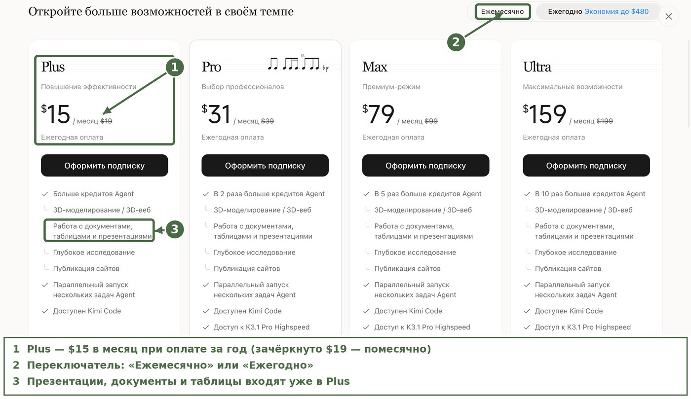
Для дипломной работы нам понадобится восемь проектов и несколько презентаций. На бесплатном тарифе Kimi даёт только 2 проекта и 500 МБ хранилища, а в часы нагрузки может вообще не ответить. Поэтому для работы над дипломом нужен платный тариф. Минимальный тариф, которого достаточно, — Plus.
Посмотрите на экран. Цифра 1 — карточка тарифа Plus. На 16 ноября 2026 года при оплате сразу за год он стоит 15 долларов в месяц. Зачёркнутая цифра 19 долларов — это цена при оплате помесячно.
Цифра 2 — переключатель вверху страницы: «Ежемесячно» или «Ежегодно». От него зависит, какие цены вы видите.
Цифра 3 — строка «Работа с документами, таблицами и презентациями». Она есть уже в Plus. Значит, собирать презентации на этом тарифе можно.
Тариф Pro дороже: 31 доллар в месяц при оплате за год и 39 при помесячной. Kimi меняет цены и лимиты, поэтому перед оплатой проверьте их на странице тарифов. Он даёт в два раза больше кредитов. Если кредиты на Plus закончатся до конца работы, можно перейти на Pro.
Страница тарифов открывается кнопкой «Обновить» внизу боковой панели, рядом с вашим именем.
Шаг 5. Что значат цифры в таблице тарифов
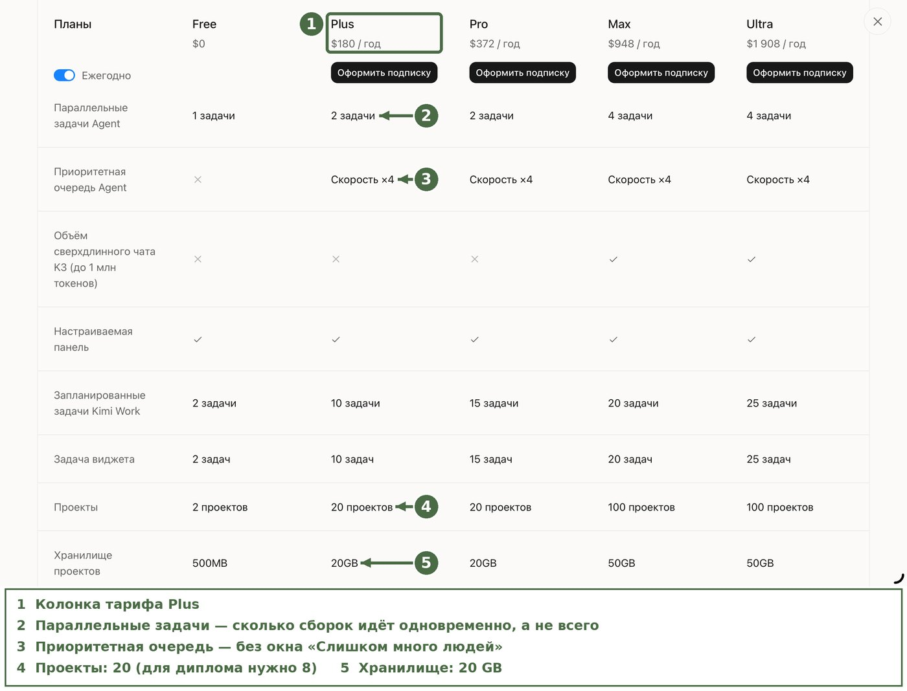
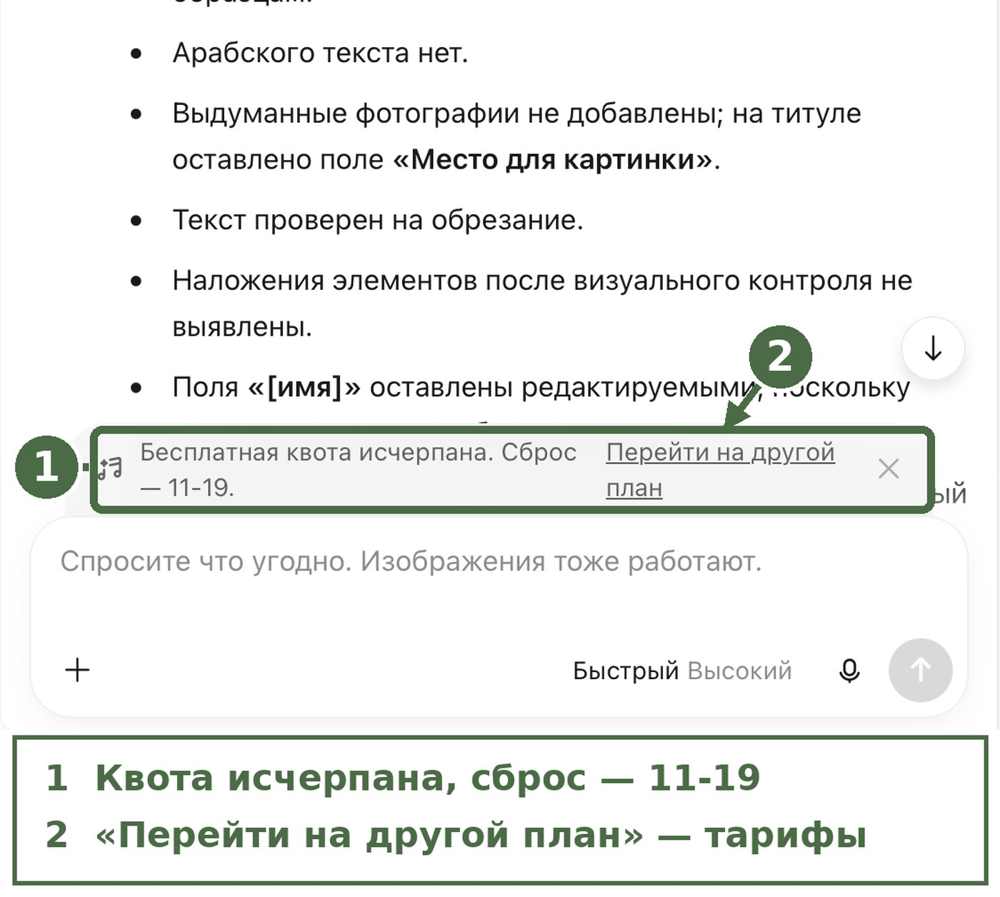
Ниже на странице тарифов есть подробная таблица. Многих пугают в ней слова «2 задачи». Давайте разберём, что они значат.
Цифра 1 — колонка тарифа Plus.
Цифра 2 — «Параллельные задачи Agent: 2 задачи». Это сколько задач Kimi выполняет одновременно. Не сколько всего. Одну презентацию собрали — запускаете следующую. И так сколько угодно.
Цифра 3 — «Приоритетная очередь: скорость ×4». На платном тарифе ваши запросы обрабатываются первыми, и окна «Слишком много людей сейчас общаются с Kimi» не будет.
Цифра 4 — «Проекты: 20». Для диплома нужно 7 проектов: 5 презентаций со своими скелетами (DF_01–DF_05), пояснительная записка (DF_06) и речь к защите (DF_07). Хватает с запасом.
Цифра 5 — «Хранилище проектов: 20 GB». На бесплатном тарифе — 500 МБ. Двадцати гигабайт хватит на все пособия, картинки-образцы и готовые презентации.
Строки «Запланированные задачи» и «Задача виджета» — это задачи, которые Kimi выполняет сам по расписанию. Для сборки презентаций они не нужны.
Что действительно ограничивает работу — это кредиты. Каждый запрос тратит часть месячного запаса. Сложная сборка тратит больше, короткий вопрос — меньше. Когда запас закончится, над полем чата появится строка «Бесплатная квота исчерпана. Сброс — [дата]» — её видно на втором скрине.
Цифра 1 — дата сброса: в этот день квота обновится. До этой даты на бесплатном тарифе Kimi работать не будет.
Цифра 2 — «Перейти на другой план» открывает страницу тарифов.
Шаг 6. Окно «Слишком много людей»
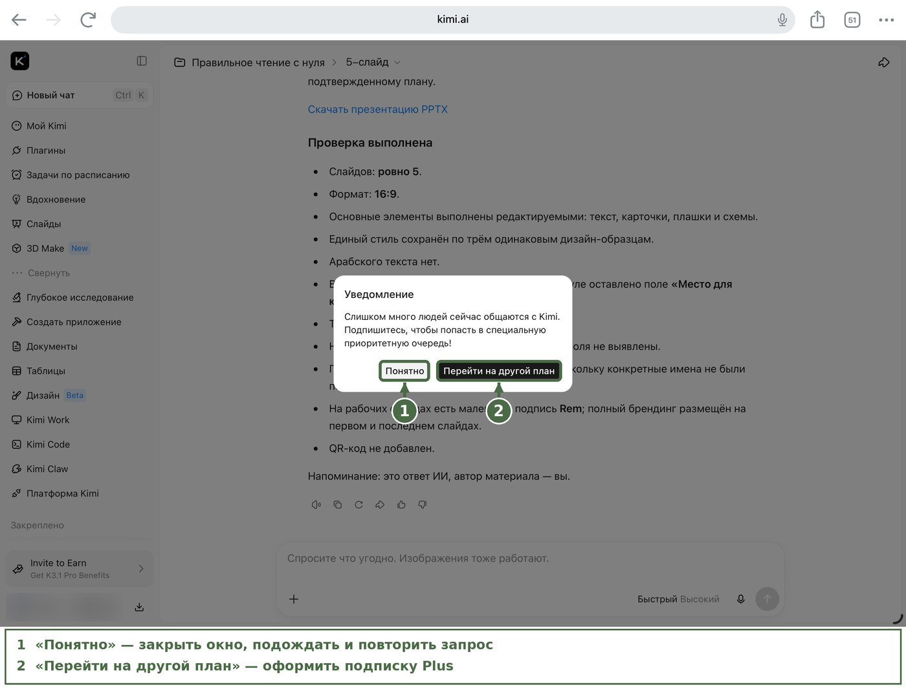
Вот так выглядит экран, если Kimi перегружен, а у вас бесплатный тариф. Появляется окно «Уведомление»: «Слишком много людей сейчас общаются с Kimi. Подпишитесь, чтобы попасть в специальную приоритетную очередь».
Это не ошибка в вашем запросе и не поломка аккаунта. Просто сейчас много пользователей, и запросы без подписки ждут.
Цифра 1 — кнопка «Понятно». Она закрывает окно. После этого подождите 10–30 минут и отправьте запрос ещё раз.
Цифра 2 — кнопка «Перейти на другой план». Она открывает страницу тарифов.
На тарифе Plus у вас приоритетная очередь, и такое окно посреди сборки не появится. Поэтому дипломные презентации собираем на платном тарифе.
Шаг 7. Kimi на телефоне и планшете
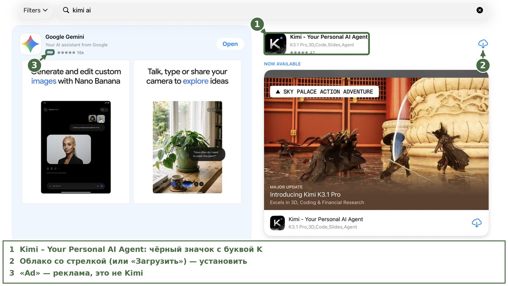
С Kimi можно работать на сайте kimi.ai или в приложении. Аккаунт один и тот же: проекты, файлы и чаты видны и там, и там, если войти тем же способом, например через тот же аккаунт Google.
Способ 1 — приложение из App Store. Откройте App Store и напишите в поиске «kimi ai».
Цифра 1 — нужное приложение: «Kimi – Your Personal AI Agent», чёрный значок с белой буквой K и синей точкой. Разработчик — Moonshot AI. Это единственное официальное приложение Kimi.
Цифра 2 — кнопка установки: «Загрузить» или облако со стрелкой, если вы уже скачивали Kimi раньше.
Цифра 3 — маленькая пометка «Ad». Она означает рекламу. Приложения с этой пометкой — это не Kimi, их не трогаем.
На телефонах с Android приложение ищем в Google Play так же: Kimi, разработчик Moonshot AI.
Способ 2 — значок сайта на экране «Домой». Если в вашем магазине приложений Kimi нет, откройте kimi.ai в Safari, нажмите «Поделиться» — квадрат со стрелкой вверх — и выберите «На экран «Домой»», потом «Добавить». На экране появится значок Kimi. Он открывает тот же сайт, со всеми функциями и проектами.
Собирать дипломные презентации удобнее на компьютере или планшете: на большом экране лучше видно слайды и план.
3. Кнопки интерфейса
Шаг 8. Поле чата и его кнопки
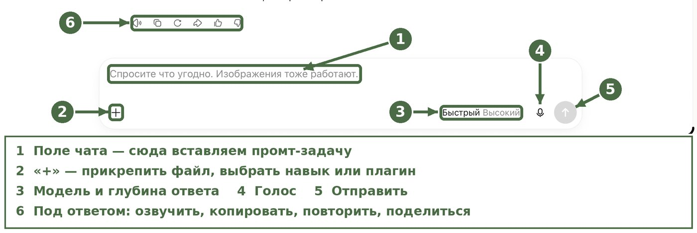
Прежде чем собирать презентацию, разберём кнопки, с которыми мы будем работать постоянно. Начнём с поля чата — места, куда мы пишем Kimi.
Цифра 1 — само поле чата. Сюда мы пишем или вставляем промт — задачу на сейчас: «опиши картинки», «составь план», «собери презентацию». Чтобы вставить скопированный промт, нажмите в поле и выберите «Вставить».
Цифра 2 — кнопка «+». Через неё прикрепляют файл к этому чату, а также выбирают навык или плагин.
Цифра 3 — модель и глубина ответа: «Быстрый» или «Высокий». Мы разбирали это в первом уроке. Для сборки презентаций выбирайте «Высокий»: Kimi думает дольше, но точнее.
Цифра 4 — микрофон. Можно не печатать, а надиктовать задачу голосом. Перед отправкой обязательно прочитайте, что распозналось.
Цифра 5 — стрелка: отправить сообщение.
Цифра 6 — кнопки под каждым ответом Kimi: озвучить ответ, скопировать его, попросить ответить заново, поделиться, а также оценить ответ — палец вверх или вниз. Кнопка «Копировать» удобна, когда текст из ответа нужно перенести в свой документ.
Шаг 9. Знак «/»: плагины и навыки
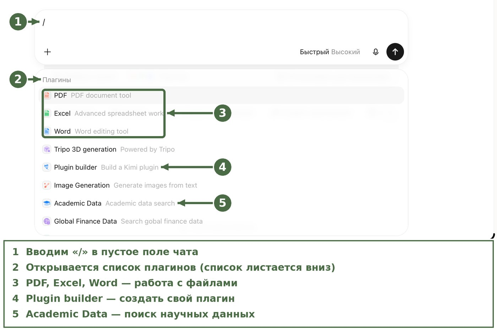
Если в пустом поле чата ввести косую черту «/», откроется список плагинов и навыков. Это быстрый способ вызвать нужный инструмент, не выходя из чата.
Цифра 1 — вводим «/» в пустое поле чата. На клавиатуре iPad косая черта находится на панели с цифрами и знаками.
Цифра 2 — открывается список «Плагины». Он длинный, его можно пролистать вниз. Навыки собраны отдельно — на странице «Плагины», во вкладке «Навыки».
Цифра 3 — плагины PDF, Excel и Word: Kimi с их помощью создаёт и редактирует файлы этих форматов.
Цифра 4 — Plugin builder: конструктор, в котором можно создать свой плагин. Для нашей работы он не нужен.
Цифра 5 — Academic Data: поиск научных данных. Может пригодиться для теоретической части диплома; каждый найденный источник проверяйте сами.
Выбрали инструмент — он появится в поле чата. Дальше пишем задачу как обычно и отправляем.
Чтобы закрыть список, сотрите косую черту.
Шаг 10. Кнопка «+» в поле чата
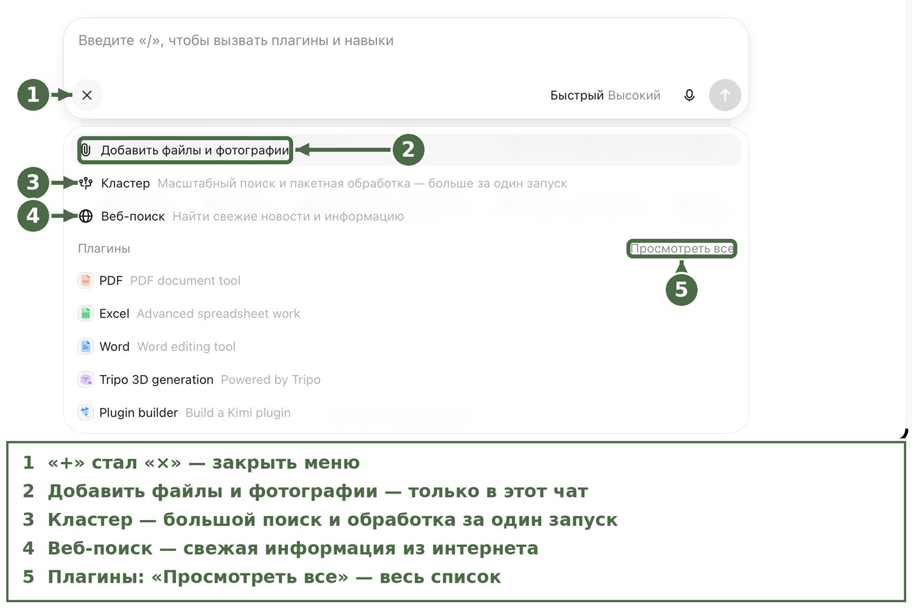
Нажмите «+» слева в поле чата. Откроется меню, а сам «+» превратится в крестик.
Цифра 1 — крестик: закрыть меню.
Цифра 2 — «Добавить файлы и фотографии». Прикрепляет файл или картинку к этому чату. Помните: такой файл Kimi видит только в этом одном чате. Материалы для диплома — картинки-образцы, пособие, план урока — загружаем в карточку «Файлы» на странице проекта, а через «+» прикрепляем то, что нужно один раз: например, скрин ошибки.
Цифра 3 — «Кластер»: большой поиск и обработка многих задач за один запуск. Тратит много кредитов; для диплома не нужен.
Цифра 4 — «Веб-поиск»: Kimi ищет свежую информацию в интернете. Полезно, когда нужен актуальный факт; найденное проверяйте по источнику.
Цифра 5 — «Плагины» и кнопка «Просмотреть все»: тот же список, что открывается по знаку «/».
Шаг 11. Под полем чата: проект, плагины, режимы
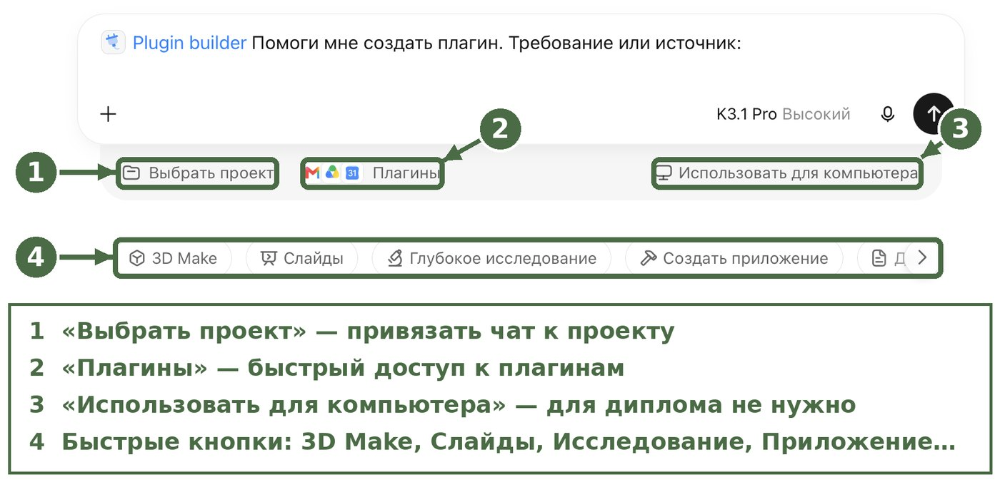
Под полем чата на главной странице Kimi есть ещё одна строка кнопок.
Цифра 1 — «Выбрать проект». Этой кнопкой новый чат сразу привязывают к проекту. Разберём её на следующем шаге — это очень важная кнопка.
Цифра 2 — «Плагины»: быстрый вход в список плагинов.
Цифра 3 — «Использовать для компьютера»: работа Kimi с вашим компьютером через Kimi Work. Для диплома не нужно.
Цифра 4 — быстрые кнопки режимов: «3D Make», «Слайды», «Глубокое исследование», «Создать приложение», «Документы» и другие; стрелка справа листает список. Нажатие на кнопку включает режим, и он появляется в поле чата.
Если вы случайно включили режим или плагин, его название появляется в поле чата синим цветом. Чтобы выключить, сотрите его в поле.
Шаг 12. Выбрать проект: чат сразу в проекте
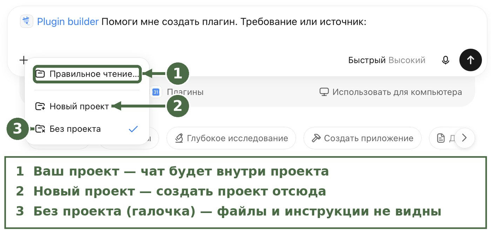
Кнопка «Выбрать проект» открывает список.
Цифра 1 — ваши проекты, например «Правильное чтение с нуля». Выбрали проект — и чат, который вы начнёте, будет внутри этого проекта: Kimi увидит инструкции и файлы проекта.
Цифра 2 — «Новый проект»: создать проект прямо отсюда.
Цифра 3 — «Без проекта». Галочка рядом означает, что сейчас чат обычный: инструкций и файлов проекта Kimi не видит.
Это частая ошибка: студентка начинает чат на главной странице, не выбрав проект, и потом удивляется, что Kimi «не видит» файлы. Перед первым сообщением проверяйте: в «Выбрать проект» стоит ваш проект, а не «Без проекта». Или просто открывайте проект в боковой панели и начинайте чат на его странице.
Перед первым сообщением проверяйте: выбран ваш проект, а не «Без проекта».
Шаг 13. Страница «Плагины» и вкладка «Навыки»
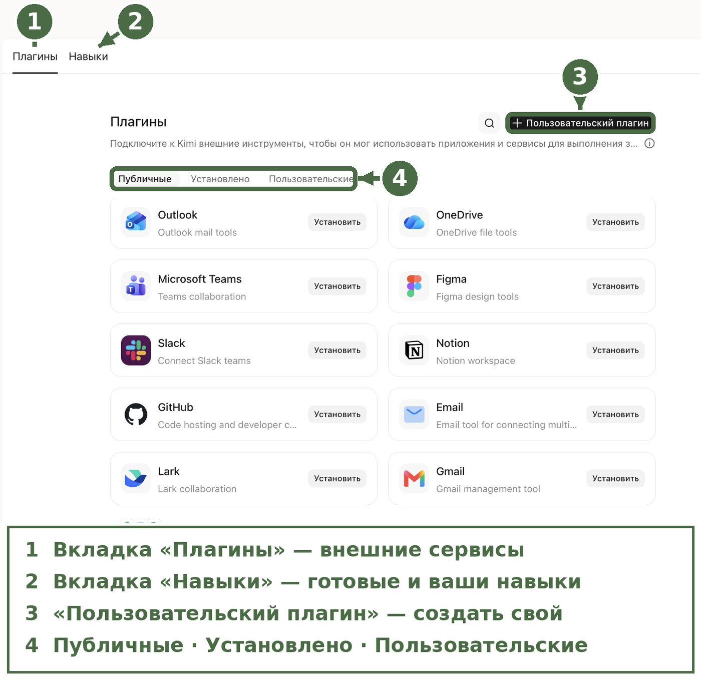
Нажмите «Плагины» в боковой панели. Откроется страница с двумя вкладками.
Цифра 1 — вкладка «Плагины»: внешние сервисы, которые можно подключить к Kimi — почта, облачные диски, офисные и учебные инструменты. Кнопка «Установить» рядом с каждым.
Цифра 2 — вкладка «Навыки»: здесь хранятся готовые навыки Kimi и навыки, которые вы создали сами.
Цифра 3 — «Пользовательский плагин»: создать свой плагин. Для работы учителя не нужен.
Цифра 4 — переключатель списка: «Публичные» — все доступные, «Установлено» — уже подключённые вами, «Пользовательские» — созданные вами.
Не устанавливайте плагины почты и облачных дисков, где хранятся данные учениц: подключая плагин, вы открываете Kimi доступ к этим данным.
Шаг 14. Страница проекта: «Инструкции» и «Файлы»
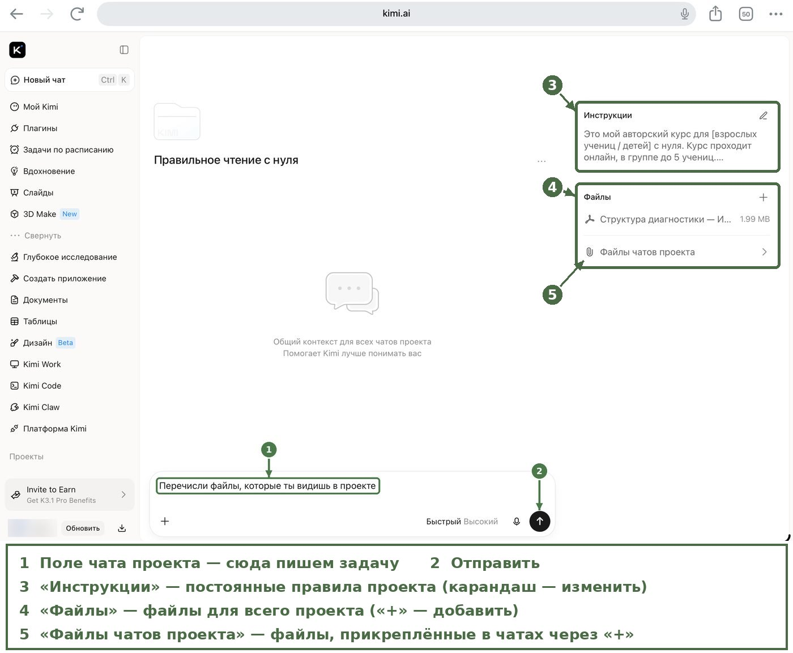
Вспомним страницу проекта из первого урока. На ней справа две карточки — это главное место для работы над дипломом.
Цифра 3 — карточка «Инструкции», с карандашом справа. Сюда вставляем постоянные правила проекта: дизайн, шрифты, порядок работы. Нажимаете на карандаш, вставляете текст, нажимаете «Сохранить».
Цифра 4 — карточка «Файлы», с плюсом справа. Сюда загружаем файлы для всего проекта: картинки-образцы дизайна, скелет урока, пособие. Цифра 5 — строка «Файлы чатов проекта»: там собраны файлы, которые прикрепляли в отдельных чатах через «+».
Цифры 1 и 2 — поле чата проекта и кнопка отправки. Задачу пишем здесь, и Kimi сразу видит и инструкции, и файлы.
Шаг 15. Настройки сеанса — правила о вас

Третье место для текста — «Настройки сеанса». Мы заполнили его в первом уроке. Путь: меню профиля → «Настройки» → «Персонализация» → «Настройки сеанса».
Здесь пишем то, что касается вас и действует во всех чатах и всех проектах: кто вы, как к вам обращаться, как отвечать. Например: «Я преподаватель таджвида, отвечай по-русски, по шагам, арабский текст по памяти не пиши».
Правила одного проекта — дизайн конкретной презентации, материалы курса — сюда не пишем. Они идут в «Инструкции» проекта.
Лимит — 1500 знаков. После заполнения обязательно нажмите «Сохранить».
Шаг 16. «Частые фразы» — банк ваших промтов
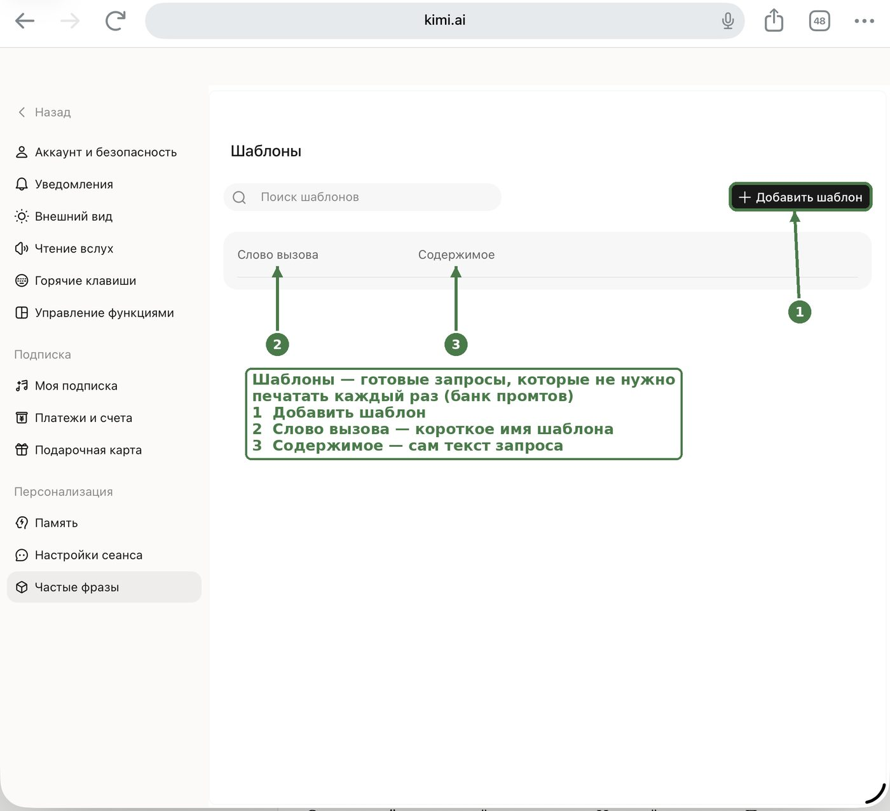
Четвёртое место — «Частые фразы», или «Шаблоны». Это ваш банк промтов. Путь тот же: «Настройки» → «Персонализация» → «Частые фразы».
Сюда сохраняют запросы, которые вы повторяете часто: проверку картинок-образцов, просьбу прикрепить файл карточкой, просьбу сократить слайд.
Цифра 1 — «Добавить шаблон».
Цифра 2 — «Слово вызова»: короткое имя шаблона, например «образцы» или «карточка».
Цифра 3 — «Содержимое»: полный текст запроса. Можно вставить любой запрос из этого урока.
Сохранили — и больше не нужно искать запрос и копировать его: шаблон вызывается по слову вызова прямо в поле чата.
Совет: сохраните в шаблоны запросы 1, 2 и 3 этого урока и запрос «прикрепи файл карточкой». Тогда сборка каждой новой презентации займёт пару минут.
Шаг 17. Что куда вставлять: сводная таблица
Соберём всё вместе. У каждого вида текста своё место. Сохраните эту таблицу — к ней удобно возвращаться.
- Поле чата внутри проекта — Задача на сейчас: «составь план», «собери», «замени текст»
- «Инструкции» на странице проекта — Постоянные правила одного проекта: дизайн, шрифты, порядок работы
- «Настройки сеанса» в настройках — Правила о вас для всех чатов: кто вы, как отвечать
- «Частые фразы» (шаблоны) в настройках — Запросы, которые вы повторяете часто
- Память: напишите в чате «Запомни: …» — Факт, который Kimi должен помнить всегда
- «Файлы» на странице проекта — Файлы для всего проекта: образцы, скелет урока, пособие
- «+» в поле чата — Файл, нужный в одном чате: скрин, пример
- «/» или «+» в поле чата; все навыки — «Плагины» → вкладка «Навыки» — Навык или плагин
- «Выбрать проект» под полем чата или чат на странице проекта — Чат, который должен видеть проект
4. Подготовка проекта
Шаг 18. Порядок сборки: шесть шагов
Прежде чем нажимать кнопки, посмотрим на весь путь целиком. Сборка любой презентации диплома идёт в шесть шагов.
- Загружаем в «Файлы» проекта картинки-образцы дизайна и свой заполненный скелет урока. Каждый файл — с точным понятным названием.
- Записываем в «Инструкции» проекта постоянные правила: дизайн, шрифты, порядок работы.
- Открываем новый чат внутри проекта и просим Kimi описать картинки-образцы. Так мы проверяем, что он их видит.
- Просим план и текст слайдов. Проверяем сами, исправляем, дополняем.
- Пишем «План подтверждаю» и просим собрать презентацию в дизайне. Скачиваем готовый файл PPTX.
- Открываем PPTX в Canva или PowerPoint и правим только текст. Дизайн уже готов.
Главное правило: задачу на дизайн мы ставим Kimi с самого начала, через инструкцию проекта. Тогда отдельно оформлять презентацию не придётся.
Задачу на дизайн ставим с самого начала — в инструкции проекта. Kimi выдаёт PPTX с готовым дизайном, вы правите только текст.
Шаг 19. Что положить в «Файлы» проекта


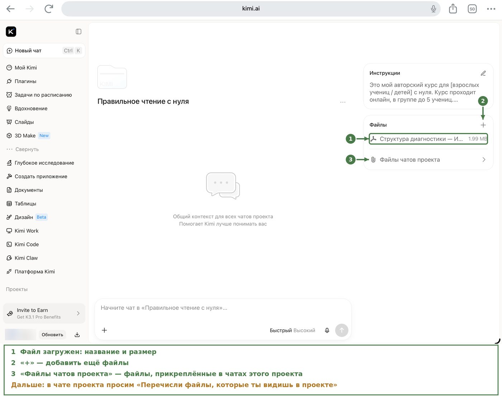
В «Файлы» проекта кладём всё, что Kimi должен видеть во всех чатах этого проекта. Это карточка «Файлы» справа на странице проекта, кнопка «плюс».
Как загрузить файл, мы проходили в первом уроке — скрины напоминают шаги: «+» у карточки «Файлы» → «Загрузите файл» → файл появился в карточке.
Для сборки презентации нужны:
- три картинки-образца дизайна. Это скриншоты или картинки слайдов, которые вам нравятся: титульный слайд, слайд с текстом, слайд с заданием. Kimi возьмёт с них цвета, фон, плашки и расположение элементов.
- ваш заполненный скелет урока — главный файл. Kimi собирает слайды строго по нему: столько и в том порядке, как в скелете. Название — точное, например «Скелет_урок_3.docx».
- по желанию — пособие или программа курса.
Называйте файлы точно и понятно, так, как в списке ниже. Помните правило из первого урока: Kimi открывает файл проекта, только когда вы называете его точно и говорите, где он лежит.
Скрепка в поле чата — это другое место. Файл, загруженный через скрепку, виден только в одном чате. Для сборки диплома все постоянные материалы кладём в «Файлы» проекта.
Ваших учениц в файлах не должно быть: никаких имён, телефонов и фотографий.
Дизайн_образец_1.jpg— картинка-образец: титульный слайдДизайн_образец_2.jpg— картинка-образец: слайд с текстомДизайн_образец_3.jpg— картинка-образец: слайд с заданиемСкелет_урок_3.docx— ваш заполненный скелет урока — главный файл: по нему Kimi собирает слайды (номер — ваш)[Пособие_курса].pdf— по желанию: пособие или программа курса
Шаг 20. Куда вставлять промт: «Инструкции» или чат
Самый частый вопрос: куда вставлять промт — в «Инструкции» проекта или в чат? Ответ зависит от того, что в нём написано.
В «Инструкции» проекта пишем правила, которые действуют всегда, в каждом чате этого проекта: как оформлять слайды, какие шрифты, в каком порядке работать, как поступать с арабским текстом. Записали один раз — и больше не повторяем.
В поле чата пишем конкретную задачу на сейчас: «опиши картинки», «составь план урока 2», «собери презентацию», «замени текст на слайде 3».
Если в вашем промте есть и правила, и задача, разделите его на две части. Правила — в «Инструкции», задачу — в чат.
И ещё одно: чат открываем внутри проекта. Зайдите в проект и начните новый чат там, а не на главной странице Kimi. Иначе Kimi не увидит ни инструкций, ни файлов проекта.
- «Инструкции» проекта: Правила, которые действуют всегда Примеры: Дизайн, шрифты, порядок работы, арабский текст Когда: Один раз, кнопка «Сохранить» Задача на сейчас Примеры: Опиши картинки · составь план · собери · замени текст Когда: Каждый раз новым сообщением
Шаг 21. Инструкция проекта: дизайн и порядок работы
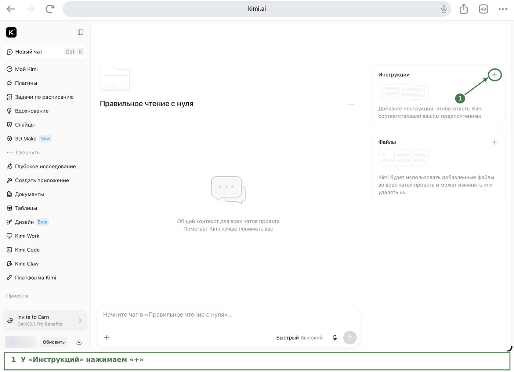

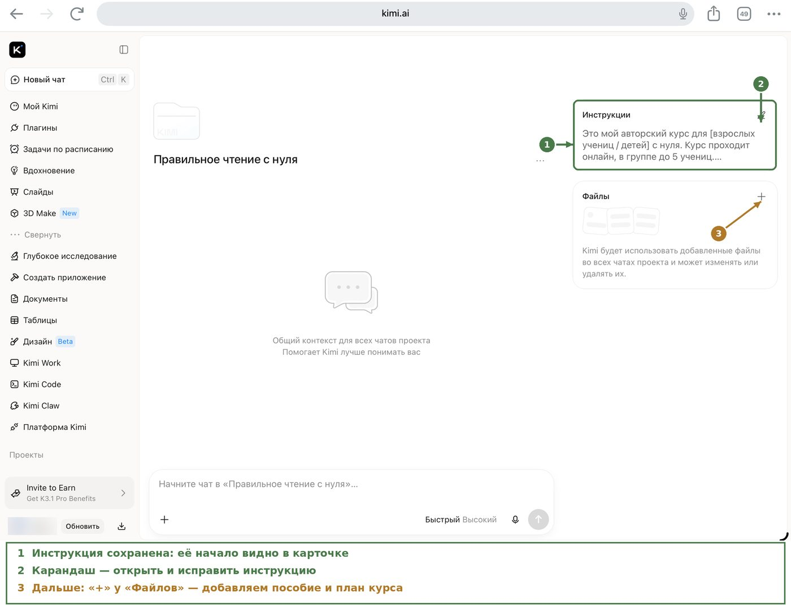
Скрины напоминают, как вставить инструкцию: «+» у карточки «Инструкции» → вставить текст в окно → «Добавить» → начало текста видно в карточке.
Вот образец инструкции проекта для сборки презентации. Скопируйте его кнопкой «Скопировать», вставьте в «Инструкции» проекта и замените слова в квадратных скобках на свои.
Обратите внимание на строку про картинки-образцы: «с картинок не переноси подписи, логотипы, имена и надписи». Без неё Kimi может перенести на ваши слайды чужую подпись или логотип с образца.
Шрифт Georgia выбран потому, что он есть и в Canva, и в PowerPoint. Если взять редкий шрифт, при открытии файла в другой программе он заменится, и текст может съехать.
Размеры шрифтов: заголовки 48, основной текст 30–32, сноски не больше 20. Такой текст хорошо читается на экране во время онлайн-урока.
Пустая рамка «Место для картинки» нужна, чтобы Kimi не вставлял выдуманные фотографии. Свои картинки вы добавите сами.
После вставки нажмите «Сохранить» и проверьте, что текст инструкции появился в карточке «Инструкции» справа.
Ты помогаешь мне собрать презентацию урока для моего дипломного курса «[название курса]». Курс для [взрослых учениц / детей], онлайн, группа до 5 учениц.
ДИЗАЙН
— Дизайн бери с картинок «Дизайн_образец_1», «Дизайн_образец_2», «Дизайн_образец_3» из файлов проекта (карточка «Файлы» справа): цвета, фон, плашки, расположение элементов. Дизайн одинаковый на всех слайдах.
— С картинок-образцов не переноси подписи, логотипы, имена и надписи — только оформление.
— Шрифты только стандартные: Georgia. Заголовки 48 pt, основной текст 30–32 pt, сноски не больше 20 pt.
— Где по смыслу нужна картинка, оставь пустую рамку с подписью «Место для картинки». Картинки не придумывай.
— Одна мысль на слайд, текста немного.
— Не используй диаграммы, SmartArt и WordArt: схемы делай из обычных фигур и текста.
ПОРЯДОК РАБОТЫ
— Перед работой открой файлы проекта по точным названиям и кратко перескажи каждый.
— Порядок и число слайдов — строго по моему скелету «[точное название скелета]». Не добавляй слайдов, которых нет в скелете, и не меняй их порядок.
— Содержание бери только из файлов проекта. Чего нет — не придумывай, напиши «[нужно дописать: …]».
— Сначала покажи план слайдов и текст. Собирай презентацию только после моего ответа «План подтверждаю».
— Арабский текст и аяты не пиши по памяти: оставь строку «Арабский текст — проверьте по источнику».
— Готовую презентацию сохрани в формате PPTX и прикрепи в чат карточкой файла для скачивания.
5. Сборка презентации
Шаг 22. Новый чат для каждой презентации

Правило работы в проекте: одна презентация — один новый чат. Новый чат начинаем в поле чата на странице проекта (на скрине — цифра 4).
Собрали презентацию в проекте DF_01 — для следующей идём в её проект и открываем там новый чат. Инструкции и файлы проекта подтянутся сами.
Почему не продолжать в том же чате? Чем длиннее чат, тем больше текста Kimi перечитывает перед каждым ответом. Это тратит больше кредитов. И Kimi может спутать материалы двух презентаций: взять заголовок из одной, а задание из другой.
А вот правки к готовой презентации пишем в том же чате, где она собиралась. Там Kimi помнит план и все ваши решения.
Чтобы не путаться, называйте чаты понятно, например «Вводная — сборка».
Шаг 23. Запрос 1. Kimi проверяет картинки-образцы

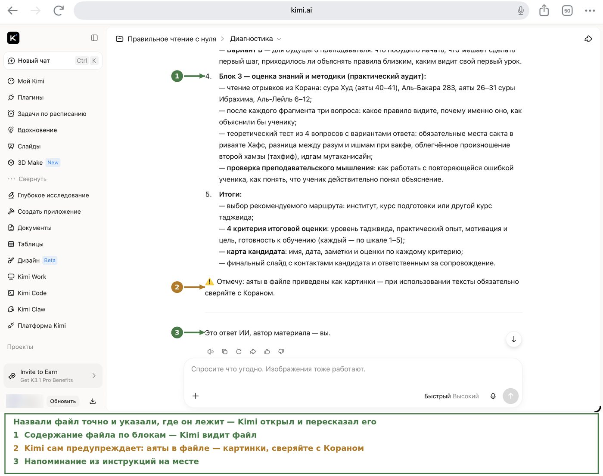
Первый запрос в новом чате проекта — проверка. Мы просим Kimi открыть картинки-образцы и описать дизайн. Ничего не создаём.
Скопируйте запрос и отправьте. Если вы назвали файлы иначе, замените названия на свои — точно так, как они записаны в «Файлах» проекта.
Читаем ответ. Kimi должен описать каждую из трёх картинок: цвет фона, плашки, где заголовок, где текст. Если описание совпадает с тем, что вы видите на картинках, — Kimi их видит, идём дальше.
Первый скрин — так выглядит ошибка: Kimi пишет, что в проекте нет файлов, хотя файл загружен. Второй скрин — правильно: файл назван точно, и Kimi пересказывает его по блокам.
Если Kimi пишет, что файлов нет, или описывает что-то другое — проверьте названия и повторите запрос. Это та же ситуация, что в первом уроке: Kimi открывает файл, только когда видит его точное название.
Сборку не начинаем, пока Kimi не описал все три образца.
Открой картинки «Дизайн_образец_1», «Дизайн_образец_2», «Дизайн_образец_3» из файлов проекта (карточка «Файлы» справа). Для каждой опиши дизайн: цвет фона, цвета плашек, где стоит заголовок, где текст, какие есть рамки и украшения. Ничего не создавай, только опиши.
Шаг 24. Запрос 2. План и текст слайдов
Второй запрос — план и текст. Здесь Kimi открывает ваш скелет и пишет текст каждого слайда строго по нему. Саму презентацию он пока не собирает.
Скопируйте запрос, вставьте его в поле чата проекта (на скрине — цифра 1) и замените в квадратных скобках: точное название вашего скелета и название урока. Отправьте стрелкой (цифра 5).
Kimi сначала кратко перескажет скелет. Это вторая проверка: если пересказ не похож на ваш скелет, значит, он открыл не тот файл или не открыл его вообще.
Потом Kimi покажет план: номер слайда, заголовок и весь текст. Это и есть ваша будущая презентация, только пока без дизайна.
Открой файлы проекта (карточка «Файлы» справа): «[точное название скелета, например Скелет_урок_3.docx]». Кратко перескажи, что в нём.
Затем составь план презентации «[название урока]» строго по этому скелету: столько слайдов и в том порядке, как в нём. Для каждого слайда напиши номер, заголовок и весь текст слайда. Где в скелете пусто или данных не хватает — не придумывай, напиши «[нужно дописать: …]». Презентацию пока не собирай — только план и текст.
Шаг 25. Проверяем план сами
Это самый важный шаг. План и текст проверяете вы — автор урока. Kimi только помогает.
Читаем план и проверяем:
- порядок слайдов совпадает с вашим планом урока;
- термины и определения верные, такие, как в вашем пособии;
- нет того, чего вы не писали: выдуманных фактов, лишних правил, чужих примеров;
- арабского текста нет. Где он нужен, стоит строка «Арабский текст — проверьте по источнику»;
- на одном слайде одна мысль, текста немного.
Что нужно исправить, пишите Kimi в этом же чате, по номерам слайдов: «На слайде 4 замени определение на такое: …». Можно дописать своё: «На слайде 6 добавь задание: …».
Когда план и текст вас устраивают полностью, переходите к сборке. После сборки исправлять текст тоже можно, но в плане это быстрее.
Сборку начинаем только после того, как вы сами проверили и подтвердили план и текст каждого слайда.
Шаг 26. Запрос 3. Сборка в дизайне
Третий запрос — сборка. Скопируйте его. Если правок больше нет, удалите строку в квадратных скобках. Если есть — допишите их туда.
Слова «План подтверждаю» — это сигнал для Kimi из инструкции проекта: можно собирать.
Обратите внимание на последнюю строку: «прикрепи в чат карточкой файла для скачивания». Её писать обязательно. Без неё Kimi иногда даёт ссылку, которая не открывается. Об этом — через два шага.
Сборка занимает несколько минут. Пока Kimi работает, страницу не закрывайте и новые сообщения не отправляйте.
План подтверждаю. [Если есть правки: на слайде 3 замени … ; на слайде 5 добавь …]
Собери презентацию по этому плану в дизайне из инструкций проекта. Проверь: число слайдов, обрезанный текст, наложения элементов. Готовый файл PPTX прикрепи в чат карточкой файла для скачивания.
Шаг 27. Kimi собрал презентацию
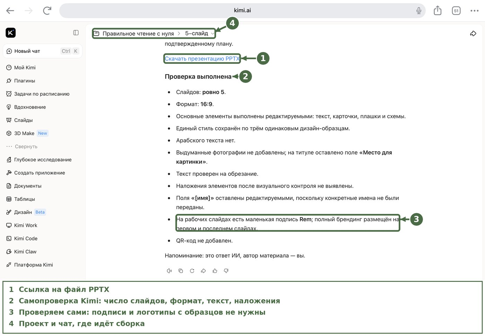
Вот так выглядит готовый ответ Kimi после сборки.
Цифра 4 — вверху видно, где идёт работа: название проекта и название чата.
Цифра 1 — ссылка или карточка файла PPTX. По ней скачиваем презентацию.
Цифра 2 — самопроверка Kimi: сколько слайдов, какой формат, редактируется ли текст, нет ли обрезанного текста и наложений. Это полезно, но это проверка Kimi, а не ваша.
Цифра 3 — пример того, что нужно заметить самим. Kimi пишет, что перенёс на слайды маленькую подпись с картинки-образца. В презентации диплома чужих подписей и логотипов быть не должно. Именно для этого в инструкции проекта есть строка «с картинок-образцов не переноси подписи, логотипы, имена и надписи».
Внизу ответа — строка «Напоминание: это ответ ИИ, автор материала — вы».
Так выглядит хороший результат: дизайн совпал с картинками-образцами, плашки одинаковые на всех слайдах, текст ровный и не вылезает за края. Она появилась из настроек сеанса, которые мы заполнили в первом уроке.
6. Получаем файл
Шаг 28. Если ссылка не открывается
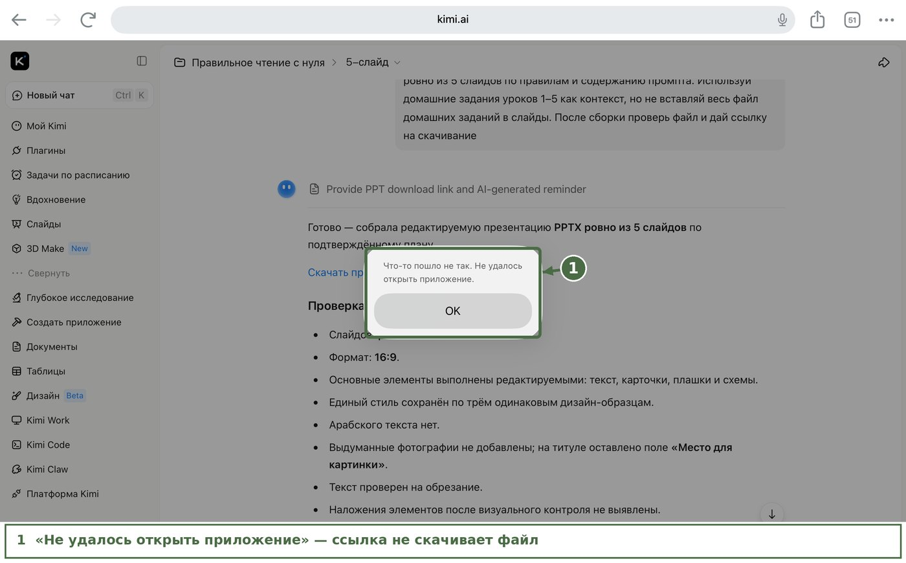
Иногда при нажатии на ссылку «Скачать презентацию PPTX» появляется окно «Что-то пошло не так. Не удалось открыть приложение». Цифра 1 на экране.
Это значит, что файл не скачался. На iPad и iPhone браузер пытается сразу открыть файл в приложении, а ссылка у Kimi на самом деле ведёт не в интернет. Нажмите «ОК» и посмотрите следующий шаг.
Шаг 29. Ссылка sandbox: просим карточку файла
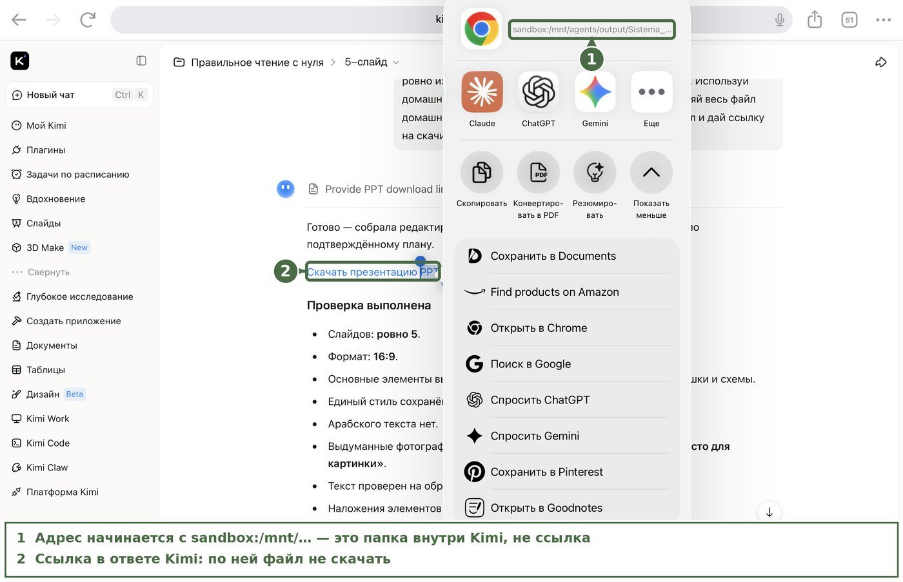
Если нажать на ссылку и держать палец, появится меню. Вверху меню виден адрес ссылки.
Цифра 1 — адрес начинается с «sandbox:/mnt/…». Это не адрес в интернете, а путь к файлу внутри рабочей папки Kimi. По такой ссылке файл не скачать ни на телефоне, ни на компьютере.
Цифра 2 — сама ссылка в ответе Kimi.
Что делаем. Закрываем меню. Сначала пролистываем ответ Kimi вверх и вниз: иногда файл уже есть в виде карточки — плашки со значком PPTX и названием файла. Её можно нажать и скачать.
Если карточки нет, копируем запрос ниже и отправляем в этот же чат. Kimi прикрепит файл заново, карточкой.
Если Kimi долго не отвечает или показывает окно про очередь, — подождите и повторите запрос. Файл не пропадёт: он остаётся в этом чате проекта.
Ссылка ведёт на sandbox:/mnt/… и не открывается. Прикрепи готовый файл PPTX в чат карточкой для скачивания.
Шаг 30. Карточка файла и предпросмотр
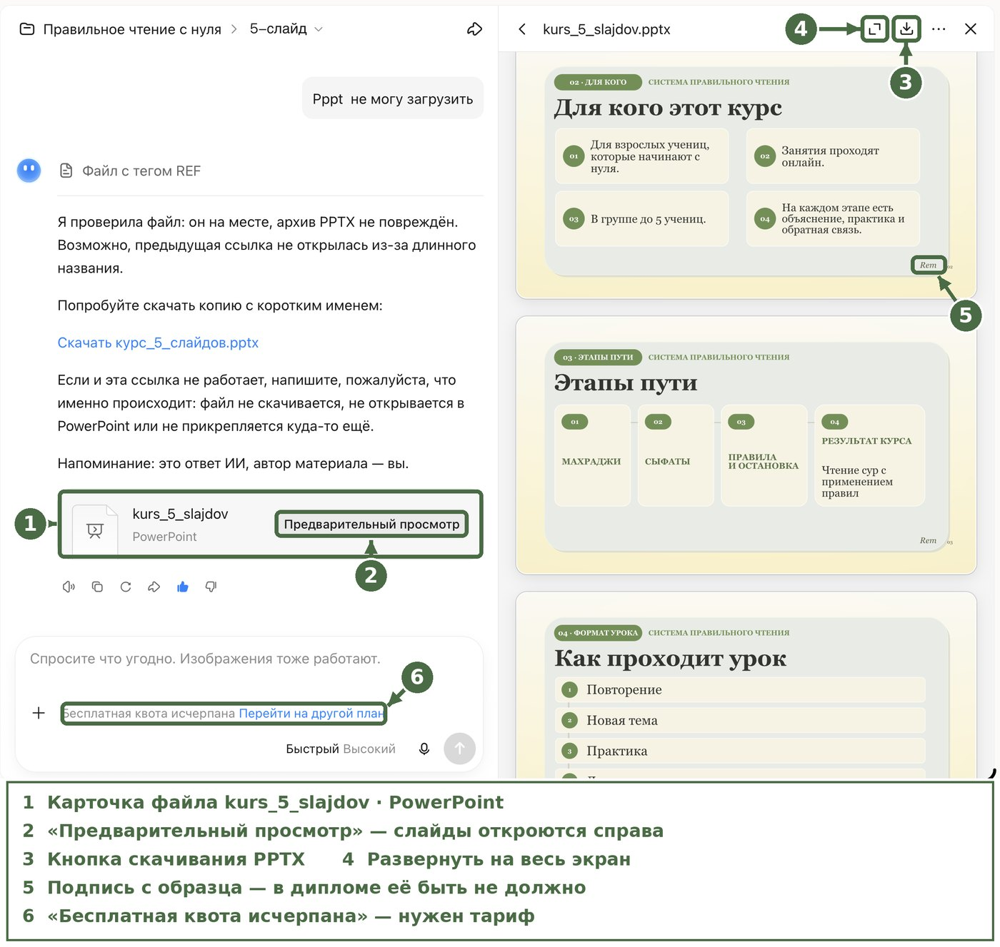
Когда Kimi прикрепляет файл правильно, внизу ответа появляется карточка файла.
Цифра 1 — карточка: название файла и пометка PowerPoint.
Цифра 2 — кнопка «Предварительный просмотр». Справа открываются слайды, их можно пролистать прямо в Kimi.
Цифра 3 — стрелка вниз вверху просмотра: скачать файл PPTX.
Цифра 4 — рамка рядом: развернуть просмотр на весь экран.
Перед скачиванием пролистайте все слайды. Если что-то не так — например, на слайдах осталась подпись с картинки-образца (цифра 5), — попросите Kimi исправить это сейчас, до скачивания.
Цифра 6 — строка «Бесплатная квота исчерпана». Она значит, что на бесплатном тарифе запас закончился; скачать готовый файл при этом можно.
Шаг 31. Правки — в том же чате
Презентация скачана, вы её посмотрели и нашли, что поправить. Мелкие правки текста удобнее сделать самим в Canva или PowerPoint. Если правок много или нужно переделать слайд, попросите Kimi.
Правки пишем в том же чате, где собиралась презентация. Называем номер слайда и точный текст: что заменить и на что. И обязательно добавляем «Остальное не меняй» — иначе Kimi может заодно переписать соседние слайды.
Образец запроса — ниже. После правки Kimi пришлёт новый файл PPTX. Скачивайте именно его, а старый удалите, чтобы не перепутать версии.
На слайде [номер] замени «[старый текст]» на «[новый текст]». Остальное не меняй. Пришли обновлённый файл PPTX карточкой для скачивания.
7. Открываем и правим PPTX
Шаг 32. Скачиваем файл: куда сохранить
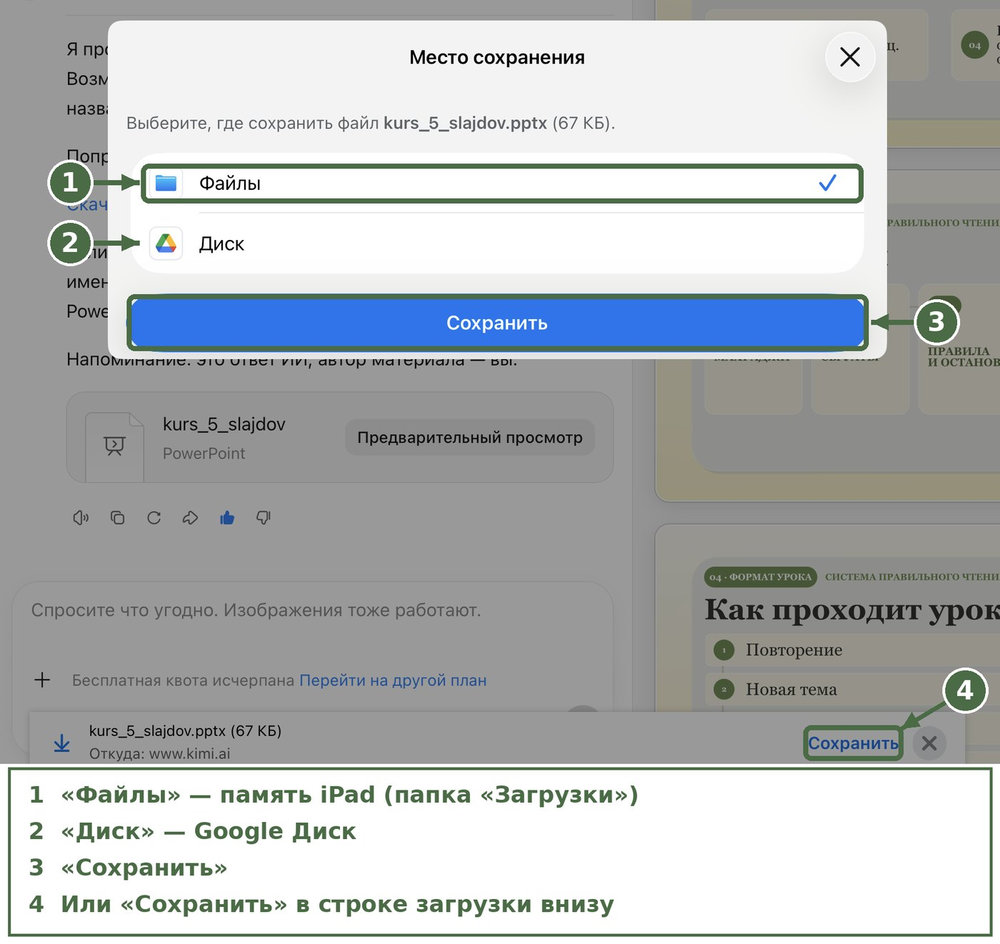
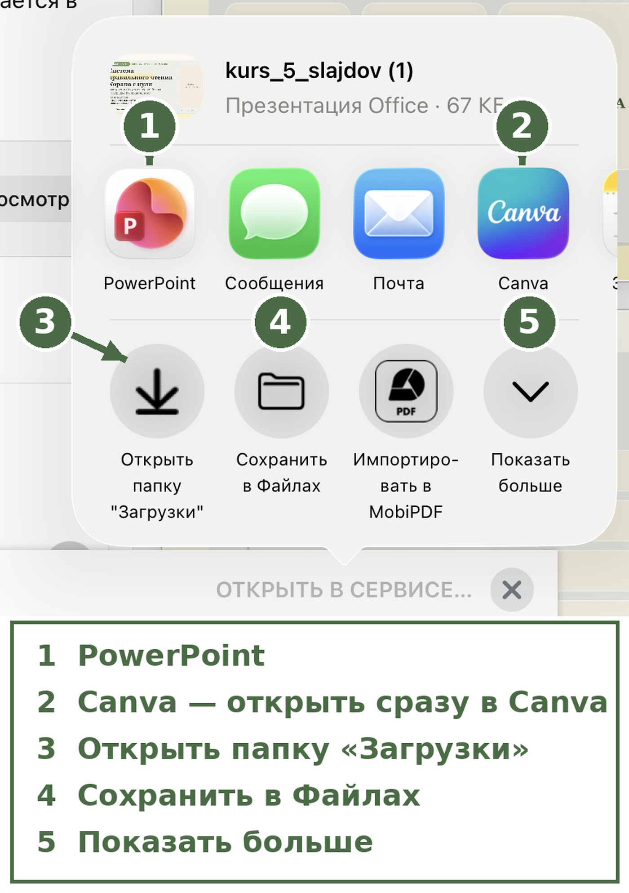
Нажимаем стрелку «Скачать» вверху просмотра. Дальше на iPad всё идёт так.
Первый скрин — окно «Место сохранения».
Цифра 1 — «Файлы»: файл сохранится в память iPad, в папку «Загрузки».
Цифра 2 — «Диск»: файл сохранится в Google Диск.
Цифра 3 — кнопка «Сохранить».
Цифра 4 — то же можно сделать кнопкой «Сохранить» в строке загрузки внизу экрана.
После сохранения внизу появится строка «Скачивание завершено». Нажмите на неё — откроется меню «Поделиться» (второй скрин).
Цифра 1 — PowerPoint: открыть файл в PowerPoint.
Цифра 2 — Canva: открыть файл сразу в Canva. Для правки выбираем её.
Цифра 3 — «Открыть папку «Загрузки»»: посмотреть, где лежит файл.
Цифра 4 — «Сохранить в Файлах»: выбрать другую папку.
Цифра 5 — «Показать больше»: другие приложения, если нужного нет в списке.
На компьютере файл просто попадает в папку «Загрузки».
Если вы скачали файл два раза, у второго в названии появится «(1)». Сразу переименуйте файл понятно, например «DF_01_Вводная_v1.pptx»: v1 — номер версии, после правок будет v2, v3.
Шаг 33. Открываем PPTX в Canva
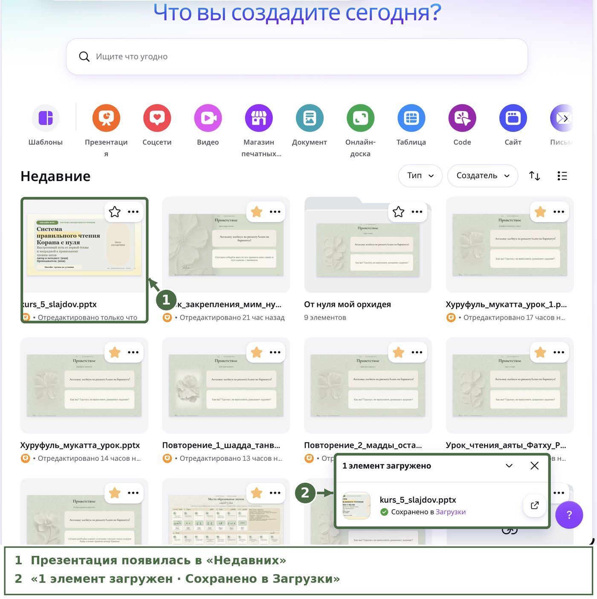
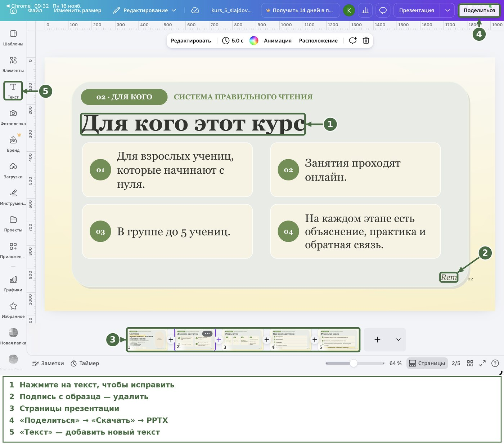
Canva открывает файлы PowerPoint и превращает каждый слайд в страницу, которую можно править. Для учениц это основной путь: Canva бесплатна.
На iPad и телефоне: в меню «Поделиться» после скачивания выберите Canva (шаг выше). Canva откроется сама и загрузит файл.
Первый скрин — главная страница Canva после загрузки.
Цифра 1 — презентация появилась в разделе «Недавние».
Цифра 2 — окно «1 элемент загружен · Сохранено в Загрузки»: импорт прошёл.
Нажмите на презентацию — она откроется в редакторе (второй скрин).
Цифра 1 — нажмите на любой текст, чтобы исправить его.
Цифра 2 — подпись, перенесённая с картинки-образца. В дипломной презентации её быть не должно: нажмите на неё и удалите.
Цифра 3 — все страницы презентации внизу; нажмите на страницу, чтобы перейти к ней.
Цифра 4 — «Поделиться»: отсюда готовую презентацию скачивают обратно в PPTX.
Цифра 5 — «Текст» на панели слева: добавить новый текст.
На компьютере: откройте canva.com → «Создать дизайн» → «Импорт файла», или просто перетащите файл .pptx на главную страницу Canva.
Важно: Canva не загружает из PowerPoint диаграммы, SmartArt и WordArt. Поэтому в инструкции проекта есть строка: «Не используй диаграммы, SmartArt и WordArt: схемы делай из обычных фигур и текста».
Шаг 34. Открываем PPTX в PowerPoint
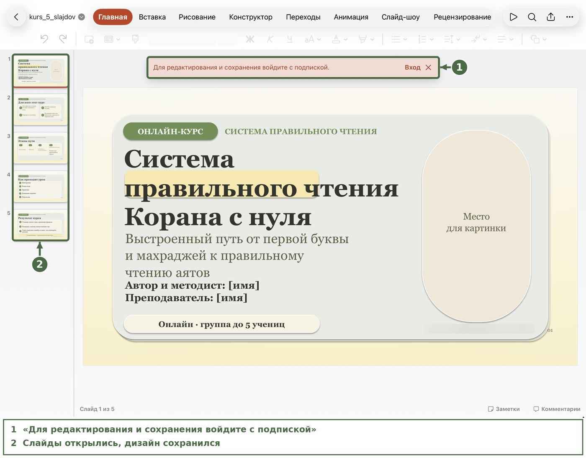
PowerPoint тоже открывает файл: в меню «Поделиться» выберите PowerPoint.
Посмотрите на скрин. Цифра 2 — слайды открылись, дизайн сохранился.
Цифра 1 — красная строка «Для редактирования и сохранения войдите с подпиской». На iPad приложение PowerPoint без подписки Microsoft 365 только показывает файл: смотреть можно, править и сохранять — нет.
Поэтому на iPad правим презентацию в Canva. Если у вас есть подписка Microsoft 365 или PowerPoint на компьютере — можно править и там: на компьютере дважды нажмите на файл .pptx.
Если PowerPoint на компьютере показывает «Защищённый просмотр», нажмите «Разрешить редактирование». Это обычная проверка файлов из интернета.
Шаг 35. Что проверить после открытия
Открыли файл — не спешите сразу править. Сначала проверьте, что всё перенеслось правильно. Пройдитесь по шести пунктам:
- Число слайдов то же, что в плане.
- Дизайн совпадает с картинками-образцами: цвета, фон, плашки.
- Шрифт остался Georgia, текст не съехал и не вылез за плашки.
- Текст редактируется: нажмите на любой заголовок — должен появиться курсор. Если текст выделяется как картинка, его не исправить, попросите Kimi пересобрать слайд.
- Рамки «Место для картинки» на месте, в них можно вставить свою картинку.
- Нет чужих подписей, логотипов и надписей с картинок-образцов.
Если что-то не так, лучше не исправлять это руками, а вернуться в чат сборки и попросить Kimi: назовите номер слайда и что именно не так.
Ошибки дизайна исправляет Kimi по вашему запросу. Вы руками правите только текст.
Шаг 36. Правим текст и сохраняем
Теперь правим текст. На скрине — редактор Canva. Нажимаем на текст на слайде (цифра 1), исправляем, нажимаем мимо — готово. Подпись с образца (цифра 2) выделяем и удаляем. Дизайн не трогаем: он уже готов.
Если на слайде слишком много текста, не уменьшайте шрифт ниже 30 — лучше попросите Kimi сократить слайд. Образец запроса ниже.
Картинки вставляем в рамки «Место для картинки». В Canva — перетащите картинку прямо в рамку. В PowerPoint — «Вставка» → «Рисунки», затем подгоните картинку по размеру рамки и удалите рамку.
Сохраняем. PowerPoint сохраняет файл в формате .pptx сам. В Canva нажмите «Поделиться» (цифра 4) → «Скачать» → тип файла «Microsoft PowerPoint (PPTX)» → «Скачать».
Не забудьте поменять номер версии в названии файла: было v1, стало v2.
Сократи текст на слайде [номер] до трёх коротких пунктов. Смысл не меняй, термины оставь как есть. Остальные слайды не трогай.
8. Возможности Kimi для учителя
Шаг 37. Карта инструментов Kimi
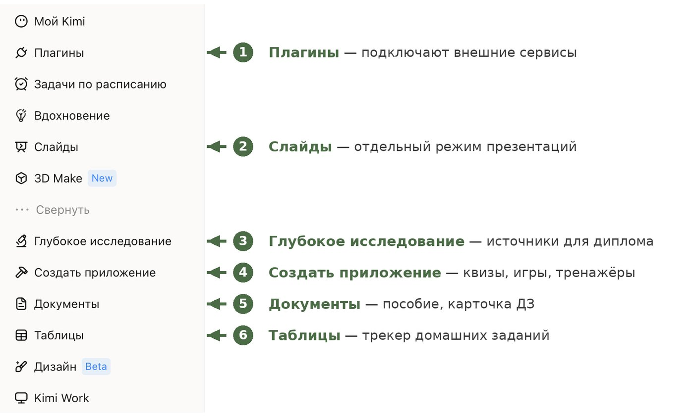
Мы научились собирать презентацию. Но Kimi умеет больше, и учителю таджвида многое из этого пригодится. Откройте боковую панель и нажмите «Ещё», чтобы увидеть все инструменты.
Цифра 1 — «Плагины»: подключают к Kimi внешние сервисы.
Цифра 2 — «Слайды»: отдельный режим для презентаций.
Цифра 3 — «Глубокое исследование»: Kimi сам ищет и читает много источников. Пригодится для теоретической части диплома.
Цифра 4 — «Создать приложение»: Kimi делает небольшие веб-страницы с кнопками — квизы, игры, тренажёры.
Цифра 5 — «Документы»: Word-файлы — пособие к уроку, карточка домашнего задания, список терминов.
Цифра 6 — «Таблицы»: Excel-файлы — например, трекер домашних заданий.
Дальше разберём каждый инструмент по шагам. Помните: каждый из них тратит кредиты, а самые «тяжёлые» — сборка приложения и глубокое исследование.
Шаг 38. Режим «Слайды»: второй способ
В боковой панели есть отдельный режим «Слайды». Это специальное место для презентаций. В нём можно описать тему, загрузить документ, картинки или даже свой шаблон PowerPoint — Kimi будет следовать его макету, шрифтам и стилю. Готовые слайды можно править прямо внутри Kimi, а затем нажать «Скачать» справа вверху и выбрать формат PPTX.
Режим включается кнопкой «Слайды» в боковой панели или быстрой кнопкой «Слайды» под полем чата (на скрине — цифра 4).
Когда этот режим полезен? Если у вас уже есть готовый шаблон презентации в формате PPTX — например, шаблон вашей школы. Тогда загрузите его в режим «Слайды» вместе с материалом урока.
Для дипломных презентаций основной способ — тот, что мы прошли: чат внутри проекта. Там Kimi видит инструкции проекта и все файлы, и все презентации одного этапа хранятся в одном месте. Режим «Слайды» — запасной путь, если в чате проекта что-то не получается.
В режиме «Слайды» дизайн и порядок работы нужно каждый раз писать в самом запросе — инструкций проекта там нет. Можно просто вставить текст инструкции из шага 21 в начало запроса.
Шаг 39. Навыки и знак «/»
Навык — это сохранённый набор правил и шагов для определённой работы. Например: «Как оформлять мои презентации». Kimi применяет навык сам, когда видит подходящую задачу, или когда вы вызываете его вручную.
Как вызвать навык или плагин: в поле чата введите косую черту «/». Появится список навыков и плагинов — выберите нужный. Все навыки собраны на странице «Плагины», во вкладке «Навыки» (шаг 13). В пустом поле чата Kimi так и подсказывает: «введите /, чтобы вызвать плагины и навыки».
Свой навык можно создать прямо в чате: описать правила словами или загрузить документ с правилами — Kimi сделает из него навык. Образец запроса ниже.
Чем навык отличается от инструкции проекта? Инструкция работает только внутри одного проекта. Навык можно вызвать в любом чате и в любом проекте. Если у вас один дизайн для всех восьми проектов диплома, удобно сделать его навыком.
Но для сборки диплома достаточно инструкций проекта. Навык — это удобство, а не обязательный шаг.
Создай навык «Дизайн моих презентаций» по правилам ниже. Применяй его, когда я прошу собрать презентацию.
[Вставьте сюда текст инструкции проекта из шага 21]
Шаг 40. Плагины
Плагины подключают к Kimi внешние приложения и сервисы. После подключения Kimi может сам ими пользоваться во время работы: например, брать данные из сервиса или работать с офисными программами.
Где найти: в боковой панели — «Плагины» (на скрине — страница плагинов), или кнопка «+» в поле чата, или косая черта «/».
Как понять, что Kimi использует плагин: в ответе появится строка «Использует плагин …».
Что важно знать учителю:
- Некоторые плагины тратят дополнительные кредиты, когда Kimi их вызывает.
- Подключая плагин, вы даёте Kimi доступ к данным этого сервиса. Не подключайте почту, облачный диск или календарь, где хранятся данные учениц.
- Список плагинов разный в разных странах, часть может быть недоступна.
Для сборки дипломных презентаций плагины не нужны. Мы знакомимся с ними, чтобы вы знали, что это за кнопка и зачем она.
Шаг 41. Квизы и игры: «Создать приложение»
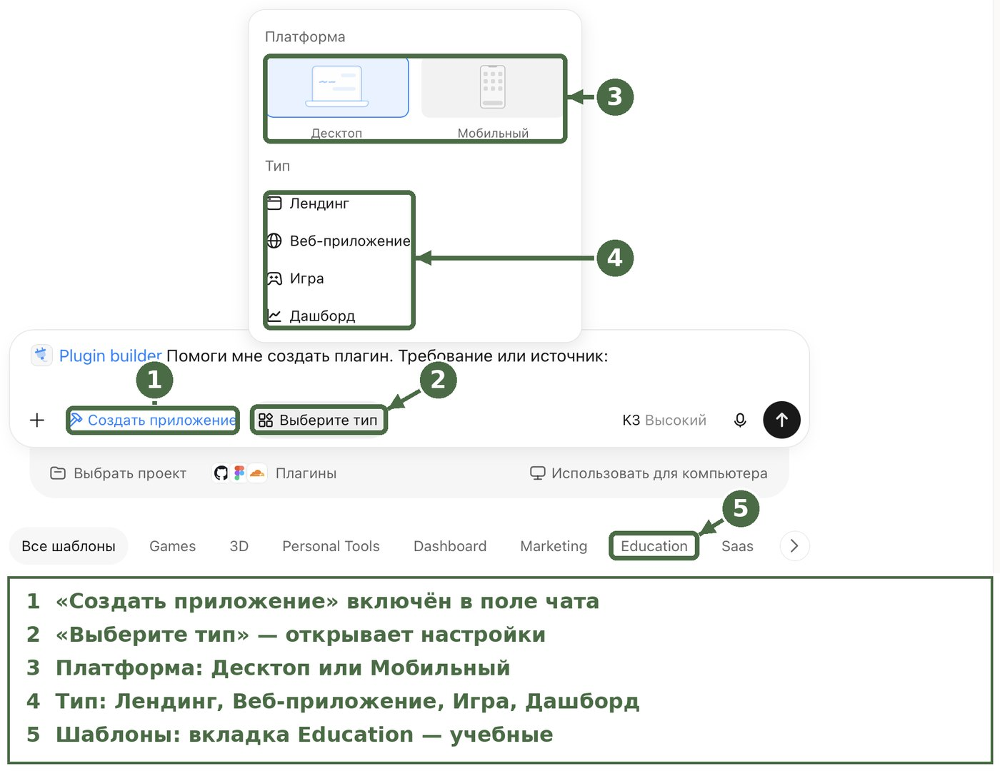
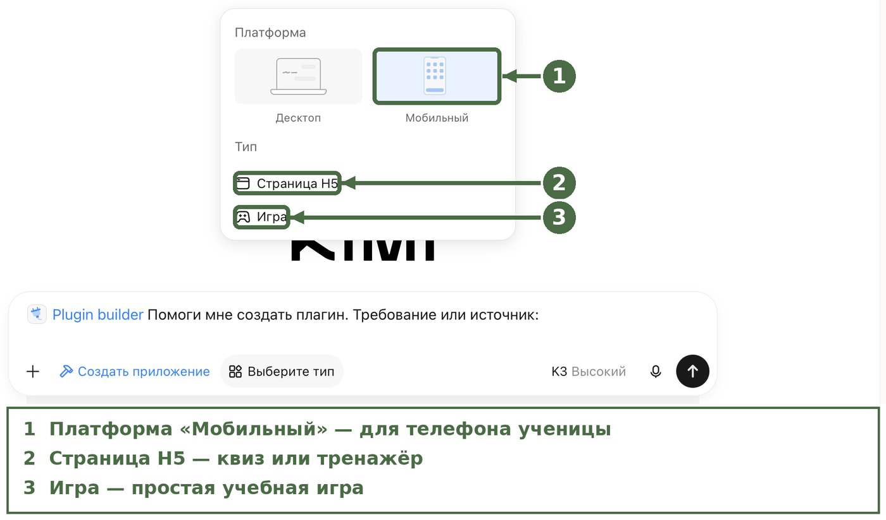
Да, Kimi умеет делать квизы, тренажёры и простые игры для учениц. Для этого есть раздел «Создать приложение» в боковой панели. Kimi собирает небольшую веб-страницу с кнопками, которую можно открыть в браузере на телефоне и пройти. По справке Kimi, этот инструмент подходит для простых страниц-инструментов и прототипов небольших игр.
Посмотрите на первый скрин.
Цифра 1 — в поле чата включён режим «Создать приложение».
Цифра 2 — кнопка «Выберите тип» открывает настройки.
Цифра 3 — платформа: «Десктоп» — для компьютера, «Мобильный» — для телефона.
Цифра 4 — тип для компьютера: «Лендинг», «Веб-приложение», «Игра», «Дашборд». Для квиза подходит «Веб-приложение».
Цифра 5 — готовые шаблоны внизу страницы. Вкладка «Education» — учебные шаблоны, их удобно взять за основу.
На втором скрине выбрана платформа «Мобильный». Здесь типы другие: «Страница H5» — простая страница для телефона, подходит для квиза и тренажёра, и «Игра». Ученицы обычно открывают задания с телефона, поэтому для них лучше выбрать «Мобильный».
Как сделать квиз по уроку:
- Откройте «Создать приложение», нажмите «Выберите тип» и выберите платформу и тип.
- Скопируйте запрос ниже и в конце вставьте текст урока или правило, по которому нужны вопросы.
- Сначала Kimi покажет список вопросов и ответов. Проверьте каждый вопрос и каждый верный ответ — это ваша методическая работа.
- Напишите «Вопросы подтверждаю». Kimi соберёт приложение и покажет его в окне предпросмотра.
- Пройдите квиз сами от начала до конца. Только потом давайте ссылку ученицам.
Правила безопасности: в квиз не вводим имена учениц и не просим их регистрироваться. Арабский текст проверяем по источнику — Kimi может ошибиться в огласовках.
Сборка приложения тратит больше кредитов, чем обычный ответ, и занимает несколько минут.
Создай веб-приложение — тренажёр-квиз для учениц моего курса таджвида по теме «[тема урока]».
— 10 вопросов, в каждом один верный ответ из четырёх, на русском языке.
— Вопросы бери только из текста ниже. Ничего не придумывай.
— После ответа покажи, верно или нет, и короткое объяснение.
— В конце — итог: сколько верных ответов из 10.
— Арабский текст не пиши по памяти: где он нужен, оставь пометку «проверьте по источнику».
— Спокойный дизайн, крупный шрифт, удобно на телефоне.
Сначала покажи список вопросов и ответов. Приложение собирай после моего ответа «Вопросы подтверждаю».
ТЕКСТ ДЛЯ ВОПРОСОВ:
[вставьте текст урока или правила]
Шаг 42. Документы: карточка ДЗ и термины
Кроме презентаций, Kimi делает документы Word. Для учителя это пособие к уроку, карточка домашнего задания, список терминов.
Работаем в том же проекте, где лежит материал урока, — тогда Kimi возьмёт текст из файла проекта, а не придумает свой.
Первый образец — карточка домашнего задания. В ней к каждому заданию сразу даётся материал и алгоритм выполнения, чтобы ученица не искала их в пособии и на слайдах.
Второй образец — термины урока: термин и определение, точно как в вашем файле.
Готовый документ скачиваем так же, как презентацию: карточкой файла. Если ссылка не открывается, просим «прикрепи файл карточкой» — как в шаге 29.
И, как всегда, каждое определение проверяете вы.
Открой файл «[точное название файла]» из файлов проекта (карточка «Файлы» справа). Составь карточку домашнего задания к уроку «[тема урока]».
Для каждого задания дай сам материал (текст или образец) и алгоритм выполнения по шагам, чтобы ученице не нужно было искать его в пособии.
Аудио и голосовые сообщения не проси. Арабский текст не пиши по памяти — оставь пометку «проверьте по источнику». Сохрани в формате Word.
По файлу «[точное название файла]» из файлов проекта составь список терминов урока «[тема урока]»: термин — определение одним предложением, так, как в файле. Ничего не добавляй от себя.
Шаг 43. Таблицы: трекер домашних заданий
Kimi делает и таблицы Excel. Учителю удобен, например, трекер домашних заданий: какое задание, к какому сроку, выполнено ли.
Скопируйте образец запроса. Обратите внимание: имён учениц в запросе нет. Таблицу Kimi делает пустую, а имена вы впишете сами уже в скачанный файл — на своём компьютере, не в Kimi.
Готовый файл Excel открывается в Excel, в Google Таблицах или в приложении «Numbers» на iPad.
Создай таблицу-трекер домашних заданий для моего курса. Столбцы: № урока, тема урока, задание, срок сдачи, выполнено (да / нет), комментарий учителя. Строки для уроков 1–10, тему и задание оставь пустыми. Имён учениц не добавляй. Сохрани в формате Excel.
Шаг 44. Глубокое исследование для диплома
«Глубокое исследование» — режим, в котором Kimi сам ищет много источников в интернете, читает их и пишет подробный отчёт. Для дипломной работы он полезен в теоретической части: найти статьи, книги и методические работы по вашей теме.
Скопируйте запрос и впишите тему дипломной работы. Исследование идёт дольше обычного ответа — иногда 10–20 минут — и тратит больше кредитов.
Главное правило: каждый источник проверяйте сами. Откройте ссылку, убедитесь, что статья существует, автор и год указаны верно, а содержание действительно такое, как пишет Kimi. Нейросеть может перепутать автора или придумать название. В список литературы диплома попадают только источники, которые вы открыли и прочитали сами.
Для вопросов таджвида и шариата Kimi — не источник. Правила сверяем по признанным трудам и с учителем.
Найди научные и методические источники по теме «[тема дипломной работы]»: статьи, книги, диссертации, учебные пособия на русском и английском языках.
Для каждого источника напиши: автор, название, год, где опубликован, ссылка и 2 предложения о содержании.
Отдельно отметь, какие источники ты нашёл и открыл сам, а в каких не уверен.
9. Ошибки и проверка
Шаг 45. Частые ошибки и что делать
Соберём в одном месте всё, что может пойти не так, и что делать в каждом случае. Сохраните этот шаг — к нему удобно возвращаться во время работы.
- Окно «Слишком много людей сейчас общаются с Kimi» — Сервис перегружен, а у вас бесплатный тариф. Нажмите «Понятно», подождите 10–30 минут и повторите. На тарифе Plus окна нет.
- Kimi пишет, что файлов в проекте нет — Назовите файл точно, как в карточке «Файлы», и скажите, где он лежит: «Открой файл «…» из файлов проекта».
- Kimi описал не те картинки или придумал дизайн — Проверьте названия картинок-образцов и повторите запрос 1. Сборку не начинайте.
- Kimi сразу собрал презентацию без плана — Проверьте, что инструкция проекта сохранена. Напишите: «Сначала покажи план и текст, собирай после моего подтверждения».
- «Не удалось открыть приложение» при нажатии на ссылку — Ссылка ведёт на sandbox:/mnt/…. Попросите: «Прикрепи файл PPTX в чат карточкой для скачивания».
- Файл скачался, но не открывается — Проверьте, что файл заканчивается на .pptx. Откройте его через Canva («Импорт файла») или PowerPoint.
- В Canva пропала схема или диаграмма — Canva не загружает диаграммы, SmartArt и WordArt. Попросите Kimi переделать схему из обычных фигур.
- Шрифт в Canva стал другим, текст съехал — Попросите Kimi пересобрать слайды шрифтом Georgia или выберите Georgia в Canva вручную.
- На слайдах чужая подпись или логотип — Добавьте в инструкцию проекта: «С картинок-образцов не переноси подписи, логотипы и надписи». Попросите Kimi убрать их.
- Kimi перепутал материалы двух презентаций — Каждую презентацию собирайте в новом чате. Начните новый чат в нужном проекте.
- Kimi написал арабский текст — Удалите его и вставьте текст из проверенного источника. Напомните Kimi правило из инструкции проекта.
- Кредиты закончились — Над полем чата будет строка «Квота исчерпана. Сброс — [дата]». Дождитесь даты сброса или перейдите на платный тариф; на Plus — на тариф Pro.
Шаг 46. Чек-лист перед сдачей куратору
Куратор проверяет готовые презентации с дизайном. Перед тем как сдать работу, пройдите по этому списку для каждой презентации. Отметьте каждый пункт.
- [ ] Презентация собрана в своём проекте, в отдельном чате
- [ ] План и текст каждого слайда проверены мной
- [ ] Термины и определения совпадают с пособием
- [ ] Арабский текст вставлен из проверенного источника, а не написан Kimi
- [ ] Дизайн одинаковый на всех слайдах и совпадает с образцами
- [ ] Нет чужих подписей, логотипов и надписей
- [ ] Шрифт читается: заголовки около 48, текст 30–32
- [ ] Все рамки «Место для картинки» заполнены или удалены
- [ ] Нет имён, фото и данных учениц
- [ ] Файл в формате PPTX, в названии этап и номер версии
10. Закрепление
Шаг 47. Практика
Практика урока — полная сборка одной презентации, до готового PPTX. Работаем в проекте того урока, который вы собираете сейчас, со своим заполненным скелетом.
- Откройте проект своего урока.
- Загрузите в «Файлы» три картинки-образца дизайна («Дизайн_образец_1», «Дизайн_образец_2», «Дизайн_образец_3») и свой заполненный скелет с точным названием.
- Вставьте инструкцию проекта из шага 21: замените квадратные скобки, впишите название скелета и нажмите «Сохранить».
- Откройте новый чат внутри проекта и отправьте запрос 1. Проверьте, что Kimi описал все три картинки и пересказал скелет.
- Отправьте запрос 2 и проверьте план по пяти пунктам из шага 25. Исправления пишите в этом же чате.
- Отправьте запрос 3, скачайте PPTX и откройте его в Canva. Поправьте текст.
- Пройдите чек-лист перед сдачей из шага 46.
Шаг 48. Термины урока
Тариф Plus — минимальный платный тариф Kimi, которого достаточно для дипломной работы.
Кредиты (квота) — запас работы Kimi. Каждый запрос тратит часть кредитов. Дату обновления Kimi показывает в строке «Сброс — [дата]».
Приоритетная очередь — на платном тарифе запросы обрабатываются первыми, без окна «Слишком много людей».
Инструкции проекта — постоянные правила, которые Kimi выполняет в каждом чате проекта.
Файлы проекта — материалы, которые Kimi видит во всех чатах проекта, если назвать файл точно.
Картинка-образец — картинка слайда, с которой Kimi берёт оформление: цвета, фон, плашки, расположение.
Карточка файла — плашка с готовым файлом в чате, по которой файл скачивается.
PPTX — формат презентации, который открывается и редактируется в Canva и PowerPoint.
Режим «Слайды» — отдельный раздел Kimi для презентаций; в нём можно загрузить свой шаблон PPTX.
Навык — сохранённый набор правил для определённой работы; вызывается знаком «/» в поле чата.
Плагин — подключение внешнего сервиса, которым Kimi пользуется во время работы.
Глубокое исследование — режим, в котором Kimi сам ищет и читает много источников и пишет отчёт.
Шаг 49. Домашнее задание
- Оформите тариф Plus. Перед оплатой проверьте актуальную цену на странице тарифов.
- Закончите практику урока: готовый PPTX вашего урока, собранный по скелету и проверенный по чек-листу.
- Сохраните итоговую версию с номером в названии, например «DF_03_v1.pptx».
- Подберите три картинки-образца дизайна, если ещё не подобрали: титульный слайд, слайд с текстом, слайд с заданием. Они понадобятся во всех проектах.
- По желанию: сделайте в «Создать приложение» квиз из 5 вопросов по одному правилу вашего курса и пройдите его сами.
Шаг 50. Рефлексия
Ответьте себе на вопросы:
- Что я теперь кладу в «Файлы» проекта, а что пишу в «Инструкции»?
- Почему задачу на дизайн мы ставим Kimi с самого начала?
- Какой шаг сборки делаю я сама, а не Kimi?
- Что я сделаю, если ссылка на PPTX не откроется?
- Какой ещё инструмент Kimi я буду использовать в работе учителя и для чего?
- Что в этом уроке было самым трудным и о чём я хочу спросить на занятии?
Шаг 51. Что дальше
Готовый PPTX — результат проекта. Дальше вы открываете проект следующего урока и проходите тот же путь со своим скелетом: файлы, инструкция, три запроса, Canva, чек-лист.
Пошаговая сборка всех пяти презентаций — на странице «Сборка диплома в Kimi: DF_01–DF_05». Этот урок можно открывать как инструкцию на любом шаге.
Помните: Kimi собирает, автор курса — вы. Каждое слово на слайдах проверяете вы.
Джазакумуллаху хайран. Kimi собирает — автор курса вы.
Rem · Разработка авторских методик · tajweedjazari4@cloud.com
 · tajweedjazari4@cloud.com
· tajweedjazari4@cloud.com